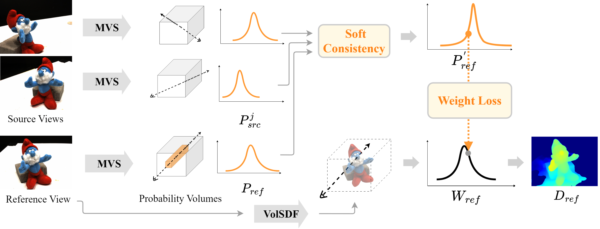

S-VolSDF: Sparse Multi-View Stereo Regularization of Neural Implicit Surfaces
ICCV 2023
- Haoyu Wu
- Alexandros Graikos
- Dimitris Samaras
Examples of reconstructed 3D geometry and rendering of novel views from the two multiview datasets DTU and BlendedMVS with only 3 input images.
Abstract
Neural rendering of implicit surfaces performs well in 3D vision applications. However, it requires dense input views as supervision. When only sparse input images are available, output quality drops significantly due to the shape-radiance ambiguity problem. We note that this ambiguity can be constrained when a 3D point is visible in multiple views, as is the case in multi-view stereo (MVS). We thus propose to regularize neural rendering optimization with an MVS solution. The use of an MVS probability volume and a generalized cross entropy loss leads to a noise-tolerant optimization process. In addition, neural rendering provides global consistency constraints that guide the MVS depth hypothesis sampling and thus improves MVS performance. Given only three sparse input views, experiments show that our method not only outperforms generic neural rendering models by a large margin but also significantly increases the reconstruction quality of MVS models.
Method

We propose to use probability volumes, obtained from multi-view stereo (MVS) models, to supervise the rendering weight estimated by VolSDF. We apply a soft consistency check to refine the volumes. The weight loss function ensures consistency between the probability volume and the rendering weight. This process allows us to use the reconstructed depth information provided by VolSDF to guide the depth hypothesis sampling in the MVS models.

Acknowledgements
This work was supported in part by the NASA Biodiversity Program (Award 80NSSC21K1027), and NSF Grant IIS-2212046.
We also thank Alfredo Rivero for his thoughtful feedback and meticulous proofreading.
The website template was borrowed from Mip-NeRF 360 and VolSDF.